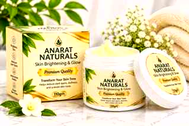

Brightens dull skin
Niacinamide supports a more radiant-looking complexion and helps improve the look of uneven tone.
 ANARAT NATURALSSKINCARE & EVERYDAY CARE
ANARAT NATURALSSKINCARE & EVERYDAY CARENEW · 110G JAR
Meet Anarat Naturals Skin Cream — a lightweight daily cream featuring Niacinamide, Alpha Arbutin and Hyaluronic Acid. Made for a nourishing skincare ritual and a more radiant-looking complexion.

Niacinamide supports a more radiant-looking complexion and helps improve the look of uneven tone.
Hyaluronic Acid helps attract and hold water for skin that feels hydrated and supple.
Alpha Arbutin is commonly used in skincare to target the appearance of dark spots and uneven tone.
Made for a simple daily ritual. Patch test first, especially if your skin is sensitive.
Nine highlighted ingredients and their stated concentrations.
2–4% · Brightening active
15–20% · Helps improve uneven-looking tone
2–5% · Targets the look of dark spots
5% · Skin-brightening active
1–2% · Helps improve the look of dullness
4–5% · Supports a more even-looking complexion
10–20% · Antioxidant skincare active
1–2% · Helps improve the look of uneven tone
Botanical skincare ingredient
Concentrations shown are the supplied product details; ensure they match the final approved product label and applicable regulatory requirements.
THE RITUAL
Start with freshly washed, slightly damp skin so your skincare routine begins on a clean base.
Take a pea-sized amount of Anarat Naturals cream with clean fingertips.
Gently massage over face and neck, avoiding the delicate eye area.
Follow the product label for frequency. In the morning, finish with broad-spectrum SPF 30+.
CUSTOMER LOVE
Verified customer reviews will appear here once feedback is collected. No invented testimonials or review counts.
TAKE IT HOME · NEW LAUNCH
110 g jar · Cash on Delivery across Pakistan
Cash on delivery across Pakistan. Delivery charges and dispatch timeline can be confirmed at ordering.
Order on WhatsApp →ANARAT NATURALS · 110GM
CURIOUS?
Helpful information for your Anarat Naturals routine.
Apply a small amount to clean skin and gently massage over face and neck, avoiding the eye area. Start once daily to check tolerance, follow the product label, and use broad-spectrum SPF 30+ during the day.
Results vary by person, skin type and routine. No fixed timeline or guaranteed result can be promised.
Introduce products gradually and avoid layering several new active products at once. Ask a dermatologist if unsure.
Skin sensitivity varies. Patch test before first use and stop if irritation occurs. Check packaging for warnings and directions.
Please check the final packaging or official brand confirmation for verified cruelty-free and vegan status.
READY FOR YOUR ROUTINE?
Anarat Naturals Skin Cream · 110 g · Rs. 1,750 launch price. Cash on Delivery across Pakistan.
Apni delivery details fill karein. Order confirmation ke liye WhatsApp khul jayega.
WHATSAPP · +92 309 4114121 · CASH ON DELIVERY